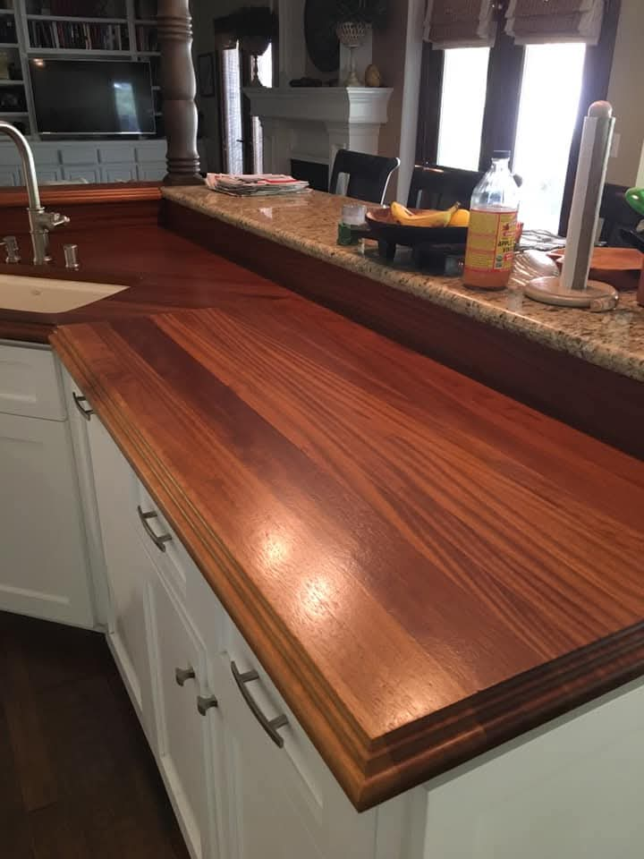

The problem
Most kitchen updates look the same when the final surface is generic. This direction gives Mark a place to show the difference between a standard install and a custom piece made to fit the room.
Project detail draft
This is the first project page because the photo set has a real story here: warm wood surfaces, kitchen function, close-up finish, and work that clearly did not come out of a box.

Most kitchen updates look the same when the final surface is generic. This direction gives Mark a place to show the difference between a standard install and a custom piece made to fit the room.
Draft scope: custom wood counter surfaces, fitted around the kitchen layout, finished for daily use, and tied into the surrounding cabinetry, backsplash, sink, and room details.
The site should call attention to grain, thickness, edge profile, finish, seams, fit against walls/cabinets, and how the wood warms up a room that could otherwise feel like a standard remodel.


Why this page exists now
Even if these are not the final photos, this page shows the shape of a real project story. Tomorrow we can replace weak images, add real project facts, and duplicate the template for built-ins, fireplaces, decks, and bathrooms.
Add better originals, especially wide finished room shots and close details.
What was there before, what Mark built, materials, timeline, and the reason the details matter.
Add a short customer quote or Mark's explanation of the work.